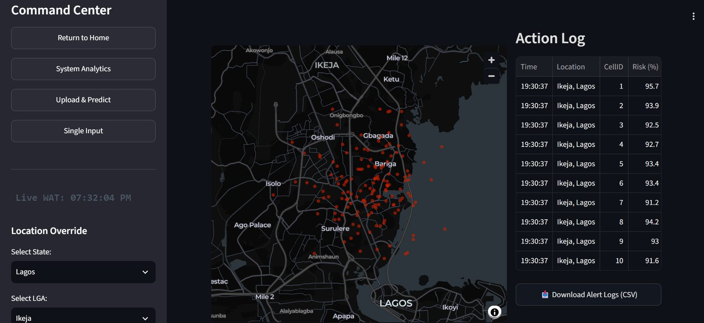

01 / 2026
IoT and Machine Learning
Smart Fruit Spoilage and Freshness Detection
An IoT system that reads environmental sensors around stored fruit and uses a machine learning model to predict freshness and shelf life in real time.
01Projects
Three case studies with live systems you can open, more hardware and software projects, websites I have built, and builds from the workbench. I have built more than 20 projects; these are the ones I can show.
IoT and Machine Learning
An IoT system that reads environmental sensors around stored fruit and uses a machine learning model to predict freshness and shelf life in real time.

Machine Learning and Data Science
A predictive model that learns from telecommunications network data to forecast traffic congestion before it happens.

Artificial Intelligence and Computer Vision
An automated attendance system that recognises faces with computer vision, replacing manual registers with a faster and more secure record.
02More projects
Real-time monitoring and remote prepaid credit management, with live readings and relay control.
Live dashboardA smart home energy controller: an ESP32 with relay modules switches two lamps and two sockets, and the dashboard shows real-time load, temperature and energy used.
An Arduino circuit with sensors and an LCD, designed and simulated in Tinkercad.
A group collection tracker that takes spoken or typed commands and shows how many members have paid.
03Web design
Website for a custom printing and branding business in Ibadan, with services, a shop, gallery, FAQ, quote requests and WhatsApp ordering.
Visit siteAgency website built with Bootstrap 5: hero slider, services, portfolio, team, reviews, blog and a contact form.
Visit siteCourse landing page for a web development bootcamp, with what you'll learn, questions, instructors and a newsletter sign-up.
Visit siteLanding page with a full-width city hero, navigation and a call to action.
Visit siteHotel landing page with a photo hero and Home, About and Contact sections.
Visit site04From the workbench
→Contact
Whether you're exploring an engineering project, seeking a STEM instructor, planning a technology initiative, or looking for a speaker, I'd love to hear from you.
abiodunamos59@gmail.com